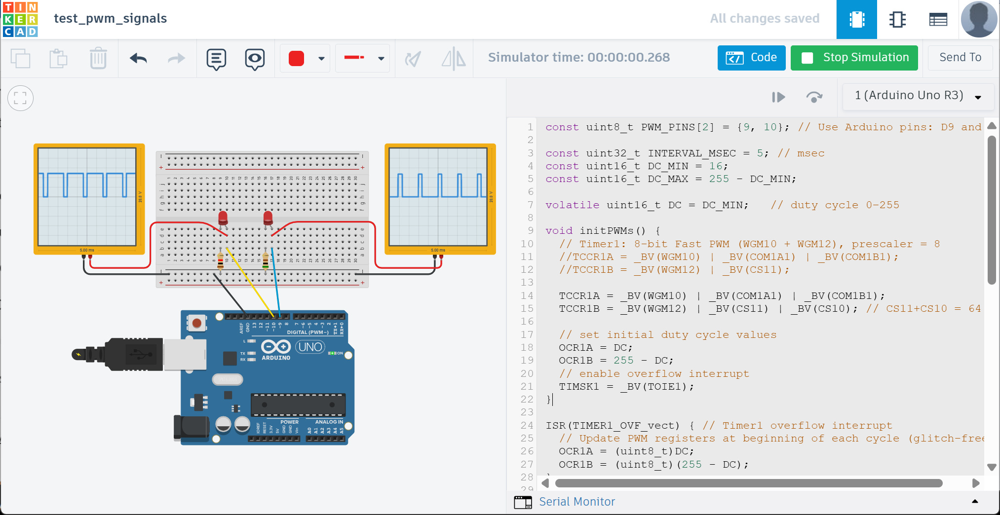
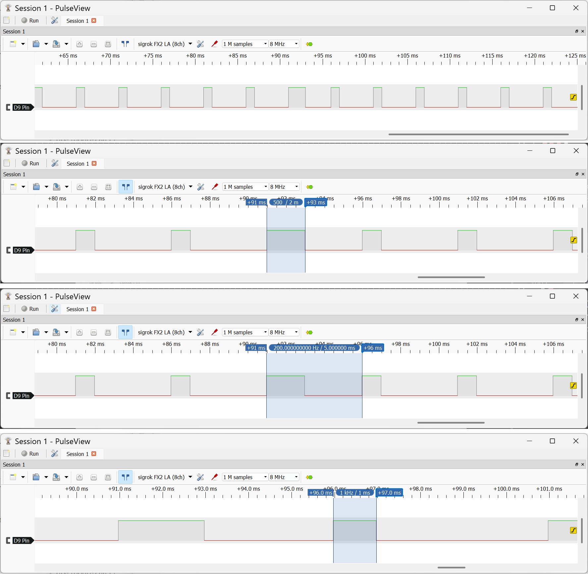
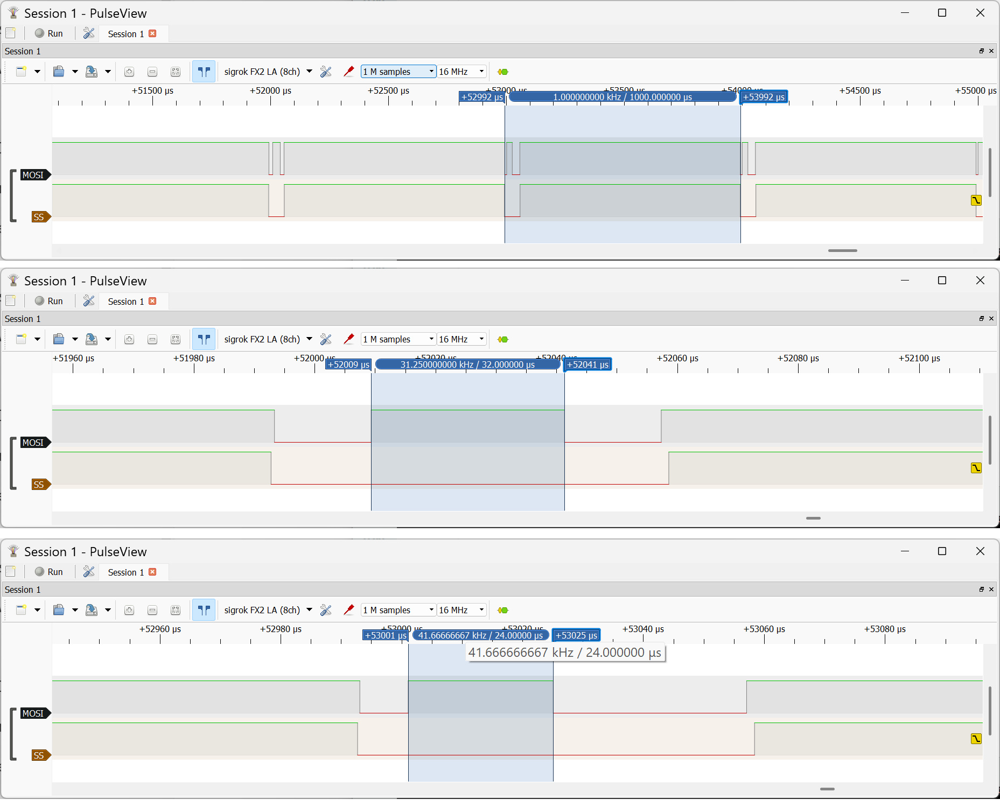
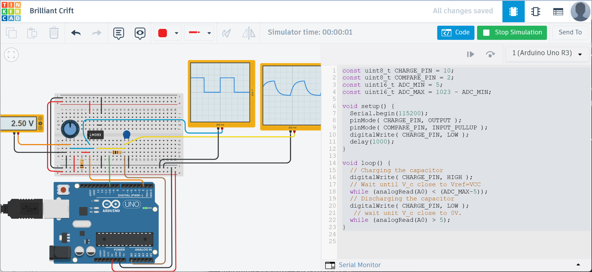
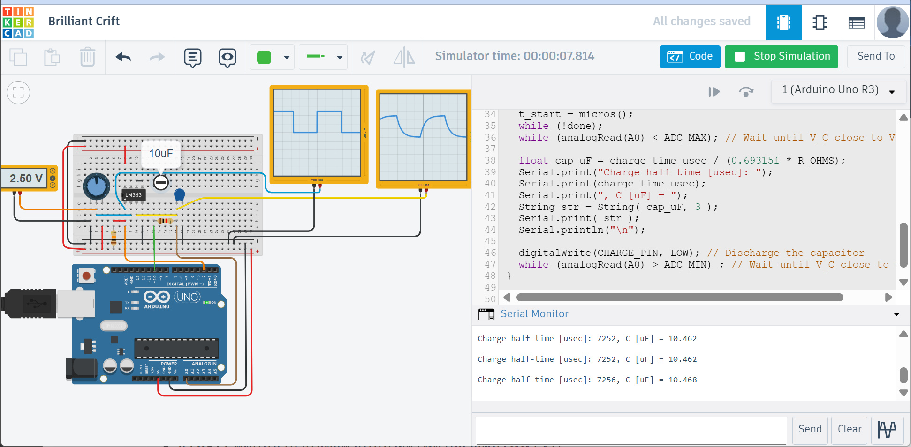

การสร้างสัญญาณทดสอบด้วยบอร์ด Arduino Uno / Nano เพื่อการฝึกใช้ออสซิลโลสโคป#
Keywords: Test Signal Generation, Arduino Programming, Signal Measurement & Analysis with Oscilloscopes
- การสร้างสัญญาณทดสอบด้วยบอร์ดไมโครคอนโทรลเลอร์
- ตัวอย่างโค้ดที่ 1: การสร้างสัญญาณ PWM จำนวน 2 ช่อง
- ตัวอย่างโค้ดที่ 2: การสร้างสัญญาณ Pulse Train
- ตัวอย่างโค้ดที่ 3: การสร้างสัญญาณพัลส์ ด้วยอัตราคงที่แต่มีความกว้างแตกต่างกันได้
- ตัวอย่างโค้ดที่ 4: การสร้างสัญญาณพัลส์โดยใช้วงจร SPI
- ตัวอย่างโค้ดที่ 5: การสร้างสัญญาณเพื่ออัดและคายประจุสำหรับตัวเก็บประจุไฟฟ้า
- ตัวอย่างโค้ดที่ 6: การวัดค่าตัวเก็บประจุไฟฟ้า
▷ การสร้างสัญญาณทดสอบด้วยบอร์ดไมโครคอนโทรลเลอร์#
บอร์ดไมโครคอนโทรลเลอร์ เช่น บอร์ด Arduino สามารถนำมาใช้ในการสร้างสัญญาณทดสอบ เพื่อใช้ฝึกการวัดและวิเคราะห์สัญญาณด้วยเครื่องมือวัดทางอิเล็กทรอนิกส์ เช่น ออสซิลโลสโคป (Oscilloscope) และเครื่องวิเคราะห์สัญญาณดิจิทัล (Logic Analyzer)
สัญญาณทดสอบ สามารถจำแนกตามชนิดได้ดังต่อไปนี้
- สัญญาณที่มีคาบ (Periodic) และสัญญาณที่ไม่มีคาบ (Aperiodic)
- สัญญาณดิจิทัล (Digital) และสัญญาณแอนะล็อก (Analog)
- สัญญาณดิจิทัล ตามรูปแบบการสื่อสารข้อมูลดิจิทัล เช่น UART/Serial/ModBus-RS485, I²C, SPI, USB และ CAN เป็นต้น ซึ่งเหมาะสำหรับการนำมาใช้ในการเรียนรู้และวิเคราะห์ด้วยอุปกรณ์ที่มีฟังก์ชัน Protocol Analyzer
สัญญาณที่ไม่มีคาบ สามารถจำแนกย่อยออกได้เป็นกรณีต่าง ๆ ดังนี้
- สัญญาณที่เกิดขึ้นแบบไม่สามารถคาดเดาได้ (Random หรือ Pseudo-random Signals) เป็นสัญญาณที่มีขอบสัญญาณขาขึ้นหรือขาลง หรือพัลส์เกิดขึ้นแบบไม่เป็นรูปแบบตายตัว มีลักษณะคล้ายสัญญาณสุ่ม เช่น สัญญาณรบกวน (Noise) หรือสัญญาณดิจิทัลที่เกิดจากเหตุการณ์ไม่แน่นอน
- สัญญาณพัลส์ที่เกิดซ้ำแต่ไม่มีคาบคงที่ (Non-periodic Repetitive Pulse Signals) เป็นสัญญาณที่มีขอบสัญญาณขาขึ้นหรือขาลง หรือพัลส์เกิดขึ้นซ้ำหลายครั้ง แต่ช่วงเวลาระหว่างพัลส์ไม่คงที่ เช่น สัญญาณที่เกิดพัลส์ซ้ำภายในช่วงเวลาที่กำหนดไว้ แต่ไม่มีคาบที่แน่นอน
สัญญาณประเภทนี้เหมาะสำหรับการฝึกใช้ฟังก์ชัน
- การเลือกใช้ Trigger Type ให้เหมาะสม เช่น Edge / Pulse Width / Timeout
- การทำงานของสโคปในโหมด NORMAL หรือ SINGLE-SHOT
ในกรณีของสัญญาณแอนะล็อก สามารถแบ่งย่อยออกเป็นสัญญาณที่มีระดับแรงดันไฟฟ้าไม่เป็นลบ และสัญญาณที่มีระดับแรงดันไฟฟ้าอยู่ทั้งในช่วงบวกและช่วงลบ
โดยทั่วไป การสร้างสัญญาณด้วยไมโครคอนโทรลเลอร์ (Microcontroller: MCU) จะเป็นสัญญาณที่มีระดับแรงดันไฟฟ้าไม่เป็นลบ (อยู่ในช่วง 0V ถึง VCC) เนื่องจากถูกจำกัดด้วยแหล่งจ่ายไฟของตัวไมโครคอนโทรลเลอร์ อย่างไรก็ตาม หากนำสัญญาณดังกล่าวไปใช้งานร่วมกับวงจรขยายสัญญาณ เช่น วงจรออปแอมป์ (Operational Amplifier: OpAmp) ก็สามารถสร้างสัญญาณที่มีช่วงแรงดันไฟฟ้ากว้างขึ้น รวมถึงสัญญาณที่มีค่าเป็นลบได้
อย่างไรก็ตาม บทความนี้จะกล่าวถึงการสร้างสัญญาณทดสอบที่มีระดับแรงดันไฟฟ้าเป็นบวกเท่านั้น
▷ การจำแนกบอร์ดไมโครคอนโทรลเลอร์สำหรับการสร้างสัญญาณทดสอบ#
บอร์ดไมโครคอนโทรลเลอร์ที่เหมาะสำหรับการสร้างสัญญาณทดสอบ สามารถจำแนกได้ตามคุณสมบัติที่สำคัญดังต่อไปนี้
1) ความสามารถในการประมวลผลความเร็วสูง
ไมโครคอนโทรลเลอร์ (MCU) อาจใช้ตัวประมวลผลแบบ 8 บิต หรือ 32 บิต โดยทั่วไปไมโครคอนโทรลเลอร์แบบ 32 บิตหลายรุ่น สามารถทำงานที่ความถี่สัญญาณนาฬิกา (Clock Frequency) สูงกว่า และมีสมรรถนะในการประมวลผลที่ดีกว่า เมื่อเทียบกับไมโครคอนโทรลเลอร์แบบ 8 บิต ทั้งนี้ ยกเว้นในกรณีของรุ่นที่ออกแบบมาเพื่อการประหยัดพลังงานเป็นหลัก ซึ่งอาจใช้ความถี่ไม่สูง เช่น ไม่เกิน 48MHz
วงจรประเภท Timer/Counter ภายในชิปไมโครคอนโทรลเลอร์ สามารถนำมาใช้ในการสร้างสัญญาณแบบมีคาบ และใช้ในการสร้างสัญญาณแบบ PWM (Pulse Width Modulation) โดยคุณสมบัติที่สำคัญของวงจรดังกล่าว ได้แก่ จำนวนช่องสัญญาณเอาต์พุต ความถี่สูงสุดที่สามารถสร้างได้ และความละเอียดในการปรับค่า เช่น ค่า Duty Cycle หรือความกว้างของพัลส์ของสัญญาณ
ชิป Espressif ESP32 มีวงจรฮาร์ดแวร์เฉพาะภายใน เช่น วงจร RMT (Remote Control Peripheral) ซึ่งสามารถนำมาใช้สร้างสัญญาณสำหรับงาน IR Remote Control ได้โดยตรง นอกจากนี้ยังมีวงจร LEDC (LED PWM Controller) สำหรับการสร้างสัญญาณ PWM ซึ่งรองรับหลายช่องสัญญาณ และสามารถกำหนดความถี่และความละเอียดของสัญญาณได้
2) การมีวงจรแปลงสัญญาณดิจิทัลเป็นแอนะล็อก (DAC)
ไมโครคอนโทรลเลอร์บางรุ่นมีวงจรแปลงสัญญาณดิจิทัลเป็นแอนะล็อก (Digital-to-Analog Converter: DAC) รวมอยู่ภายในอย่างน้อย 1 ช่องสัญญาณเอาต์พุต ซึ่งสามารถนำมาใช้สร้างสัญญาณแอนะล็อกได้โดยตรง
3) การไม่มีวงจรแปลงสัญญาณดิจิทัลเป็นแอนะล็อก
ในกรณีที่ไมโครคอนโทรลเลอร์ไม่มีวงจร DAC ภายใน สามารถใช้วิธีการต่อไปนี้เพื่อสร้างสัญญาณแอนะล็อกแทนได้
ตัวอย่างบอร์ดไมโครคอนโทรลเลอร์ที่มีวงจร DAC
- Arduino DUE (มี 12-bit DAC ภายในชิป SAM3X8E จำนวน 2 ช่อง)
- Arduino Zero (มี 10-bit DAC ภายในชิป SAMD21 จำนวน 1 ช่อง ความเร็วสูงถึง 350Ksps)
- Arduino Uno R4 / Uno R4 WiFi (มี 12-bit DAC ภายในชิป Renesas RA4M1 จำนวน 1 ช่อง ความเร็วสูงถึง 33.3 Ksps)
- Espressif ESP32 Dev Kit (มี 8-bit DAC จำนวน 2 ช่อง ความเร็วสูงถึง 100 Ksps )
3.1) การใช้สัญญาณ PWM ร่วมกับวงจรกรองสัญญาณ
สร้างสัญญาณแบบ Pulse Width Modulation (PWM) แล้วนำไปผ่านวงจรกรองความถี่ต่ำ (Low-pass RC filter) เพื่อแปลงสัญญาณให้มีลักษณะเป็นแอนะล็อก จากนั้นอาจใช้วงจรบัฟเฟอร์ด้วยไอซีออปแอมป์ เพื่อเพิ่มความสามารถในการขับโหลด
3.2) การใช้ไอซี DAC ภายนอก
โดยทั่วไป วงจรที่มีไอซี DAC ภายนอก จะเชื่อมต่อกับไมโครคอนโทรลเลอร์ ผ่านบัส I²C หรือบัส SPI ตัวอย่างเช่น ไอซี MCP4725 ซึ่งเป็นไอซี DAC ที่สื่อสารผ่านบัส I²C อย่างไรก็ตาม การใช้บัส I²C มีข้อจำกัดด้านความเร็วในการสื่อสารหรืออัตราการอัปเดตค่าของสัญญาณเอาต์พุต (หน่วยวัดเป็น Kilo Samples per Second หรือ Ksps) ซึ่งแตกต่างจากการใช้วงจร DAC ที่รวมอยู่ภายในชิปไมโครคอนโทรลเลอร์
3.3) การใช้ไอซี Digital Potentiometer
ในกรณีนี้เป็นการใช้ไอซี Digital Potentiometer เพื่อสร้างวงจรแบ่งแรงดันไฟฟ้าที่สามารถปรับค่าแรงดันเอาต์พุตได้โดยการโปรแกรมค่าเอาต์พุต ไอซีประเภทนี้มักเชื่อมต่อผ่านบัส I²C ตัวอย่างเช่น ไอซี MCP4010 เป็นต้น
ถ้ดไปเป็นตัวอย่างการเขียนโค้ดสำหรับบอร์ด Arduino Uno / Nano เพื่อสร้างสัญญาณทดสอบ สำหรับการฝึกใช้งานออสซิลโลสโคป
▷ ตัวอย่างโค้ดที่ 1: การสร้างสัญญาณ PWM จำนวน 2 ช่อง#
ตัวอย่างโค้ดนี้สาธิตการเปิดใช้งานวงจร Timer 1 ภายในชิป ATmega328P ที่มีอยู่บนบอร์ด Arduino Uno หรือ Arduino Nano โดยสัญญาณเอาต์พุตที่ได้มีจำนวน 2 ช่องสัญญาณ (เลือกใช้ขา Arduino D9 และ D10) และเป็นสัญญาณแบบ PWM ทั้งสองช่องมีความถี่เท่ากัน แต่มีค่า Duty Cycle แตกต่างกัน
วงจร Timer1 ถูกกำหนดให้ทำงานในโหมด Fast PWM แบบ 8 บิต (WGM13:WGM10 = 0b0101) โดยมีค่า TOP = 0x00FF (255) และใช้ตัวหารความถี่นาฬิกา (Prescaler) เท่ากับ 8 ส่งผลให้สัญญาณ PWM ทั้งสองช่องมีความถี่เท่ากัน แต่สามารถกำหนดค่า Duty Cycle ของสัญญาณแตกต่างกันได้อย่างอิสระ ผ่านรีจิสเตอร์ OCR1A และ OCR1B (ซึ่งการทำงานของวงจรจะตรงกับขา Arduino D9 และ D10)
ข้อสังเกต: คำสั่ง millis() และ micros() ของ Arduino API ใช้วงจร Timer 0 ดังนั้นการใช้งาน
Timer 1 จึงไม่ส่งผลต่อการทำงานของ Arduino ในส่วนของการใช้คำสั่งดังกล่าว
Duty Cycle ของสัญญาณ PWM คือสัดส่วนของช่วงเวลาที่สัญญาณมีระดับลอจิกสูง (ON time) ต่อคาบเวลาของสัญญาณทั้งหมด โดยมักแสดงค่าเป็นเปอร์เซ็นต์ (%)
ในตัวอย่างนี้ Duty Cycle ของสัญญาณ PWM จะเปลี่ยนแปลง เพิ่มขึ้นและลดลงอยู่นช่วงที่กำหนดไว้
const uint8_t PWM_PINS[2] = {9, 10}; // Use Arduino pins: D9 and D10
const uint32_t INTERVAL_MSEC = 5; // msec
const uint16_t DC_MIN = 16;
const uint16_t DC_MAX = 255 - DC_MIN;
volatile uint16_t DC = DC_MIN; // duty cycle 0–255
void initPWMs() {
// Timer1: 8-bit Fast PWM (WGM10 + WGM12), prescaler = 8
TCCR1A = _BV(WGM10) | _BV(COM1A1) | _BV(COM1B1);
TCCR1B = _BV(WGM12) | _BV(CS11);
// set initial duty cycle values
OCR1A = DC;
OCR1B = 255 - DC;
// enable overflow interrupt
TIMSK1 = _BV(TOIE1);
sei(); // enable global interrupts
}
ISR(TIMER1_OVF_vect) { // Timer1 overflow interrupt
// Update PWM registers at beginning of each cycle (glitch-free)
OCR1A = (uint8_t)DC;
OCR1B = (uint8_t)(255 - DC);
}
void setup() {
pinMode(PWM_PINS[0], OUTPUT); // D9
pinMode(PWM_PINS[1], OUTPUT); // D10
initPWMs(); // Initialize the timer 1 to generate PWM signals
}
uint32_t ts = 0;
int16_t step = 8; // increment or decrement step
void loop() {
uint32_t now = millis();
if (now - ts >= INTERVAL_MSEC) {
ts = now; // update timestamp
// Compute a new value for the duty cycle
DC += step;
if (DC >= DC_MAX) {
DC = DC_MAX;
step = -step; // change to decrement
}
else if (DC <= DC_MIN) {
DC = DC_MIN;
step = -step; // change to increment
}
}
}
โจทย์การวัดสัญญาณด้วย Oscilloscope
- ใช้ช่องสัญญาณ CH1 และ CH2 เพื่อวัดสัญญาณทดสอบที่สร้างจากบอร์ด Arduino และให้ต่อ Ground ของ Probe กับ GND ของบอร์ด Arduino
- ตั้งค่า Time base (Time/Div) ให้อยู่ในช่วงที่เหมาะสม
- เลือกใช้งานโหมด NORMAL Data Acquisition และทดลองใช้งานโหมดการทริกเกอร์ (Trigger Mode) ต่าง ๆ เช่น Edge และ Pulse Width
- ทำการวัดสัญญาณเพื่อหาค่าความถี่ (Frequency) และค่า Duty Cycle ต่ำสุดและสูงสุดของสัญญาณในทั้งสองช่อง

รูป: ตัวอย่างการจำลองการทำงานของโค้ดด้วย AUTODESK Tinkercad - Circuits
▷ ตัวอย่างโค้ดที่ 2: การสร้างสัญญาณ Pulse Train#
ตัวอย่างโค้ดนี้สาธิตการเปิดใช้งานวงจร Timer 1 ภายในชิป ATmega328P โดยสร้างสัญญาณเอาต์พุต จำนวน 2 ช่องสัญญาณ (เลือกใช้ขา Arduino D9 และ D10) และเป็นสัญญาณแบบ Pulse Train เช่น มีการสร้างสัญญาณพัลส์จำนวนหนึ่ง แล้วเว้นช่วงเวลา ก่อนจะเริ่มสัญญาณพัลส์อีกรอบหนึ่ง
Pulse Train คือ สัญญาณที่ประกอบด้วยพัลส์ (Pulses) จำนวนหนึ่งซึ่งเกิดขึ้นต่อเนื่องกันในช่วงเวลาหนึ่ง โดยพัลส์แต่ละพัลส์ อาจมีความกว้างเท่ากันหรือแตกต่างกันก็ได้ หลังจากจบชุดพัลส์ จะมีช่วงเวลาที่ไม่มีสัญญาณ ก่อนที่จะเริ่มชุดพัลส์ถัดไป
สัญญาณแบบ Pulse Train มักเป็นสัญญาณที่ ไม่มีคาบคงที่ เมื่อพิจารณาในระยะยาว แต่ภายในแต่ละชุดพัลส์อาจมีความถี่คงที่ สัญญาณประเภทนี้พบได้บ่อยในระบบดิจิทัลที่ทำงานแบบอาศัยเหตุการณ์ (Event-driven systems)
const uint8_t PWM_PINS[2] = {9, 10}; // Arduino pins: D9 and D10
uint8_t num_pulses = 5;
uint32_t interval_msec = 50; // msec
volatile uint8_t count = 0;
volatile bool active = false;
void initPWMs() {
// Timer1: 8-bit Fast PWM (WGM10 + WGM12), prescaler = 8
TCCR1A = _BV(WGM10) | _BV(COM1A1) | _BV(COM1B1);
TCCR1B = _BV(WGM12) | _BV(CS11);
OCR1A = 127; // 50% duty
OCR1B = 63;
count = 0;
active = true;
// enable overflow + compare interrupts
TIMSK1 = _BV(TOIE1) | _BV(OCIE1A) | _BV(OCIE1B);
sei();
}
ISR(TIMER1_OVF_vect) {
count++;
OCR1B += 16;
if (count == num_pulses) {
active = false;
count = 0;
}
}
ISR(TIMER1_COMPA_vect) { // Timer1 Output Compare A interrupt
if (!active) { // Disable PWM output A
TCCR1A &= ~_BV(COM1A1);
TIMSK1 &= ~_BV(OCIE1A);
}
}
ISR(TIMER1_COMPB_vect) { // Timer1 Output Compare B interrupt
if (!active) { // Disable PWM output B
TCCR1A &= ~_BV(COM1B1);
TIMSK1 &= ~_BV(OCIE1B);
}
}
void setup() {
Serial.begin(115200);
pinMode(PWM_PINS[0], OUTPUT); // D9
pinMode(PWM_PINS[1], OUTPUT); // D10
srand(analogRead(A0));
initPWMs();
}
uint32_t ts = 0;
void loop() {
uint32_t now = millis();
if (!active) {
if (now - ts >= interval_msec) {
ts = now;
interval_msec = 10 + rand() % 91;
initPWMs();
}
} else {
ts = now;
}
}
โจทย์การวัดสัญญาณด้วย Oscilloscope
- ใช้ช่องสัญญาณ CH1 และ CH2 เพื่อวัดสัญญาณทดสอบที่สร้างจากบอร์ด Arduino และให้ต่อ Ground ของ Probe กับ GND ของบอร์ด Arduino
- ตั้งค่า Time base (Time/Div) ให้อยู่ในช่วงที่เหมาะสม เพื่อให้สามารถมองเห็นทั้งพัลส์ภายในชุด และช่วงเวลาระหว่างชุดพัลส์ได้อย่างชัดเจน
- เลือกใช้งานโหมด NORMAL Data Acquisition และทดลองใช้งานโหมดการทริกเกอร์ (Trigger Mode) ต่าง ๆ เช่น Edge, Pulse Width, Nth Edge และ Time Out
- วัดสัญญาณจากช่อง CH1 เพื่อตรวจสอบจำนวนพัลส์ที่ปรากฏในแต่ละชุด รวมถึงสังเกตช่วงเวลาที่ไม่มีสัญญาณ (Idle Period) ระหว่างชุด Pulse Train และตรวจสอบว่าระยะเวลาระหว่างชุดพัลส์มีการเปลี่ยนแปลงหรือไม่
- วัดสัญญาณจากช่อง CH2 เพื่อตรวจสอบการเปลี่ยนแปลงของค่า Duty Cycle ของสัญญาณ Pulse Train ภายในแต่ละชุด
▷ ตัวอย่างโค้ดที่ 3: การสร้างสัญญาณพัลส์ด้วยอัตราคงที่แต่มีความกว้างแตกต่างกันได้#
โค้ดตัวอย่างถัดไปสาธิตการสร้างสัญญาณพัลส์ที่เกิดขึ้นด้วยอัตราคงที่ ทุก ๆ 5 msec แต่มีความกว้างไม่คงที่ พัลส์มีความกว้างเท่ากับ 1 msec แต่มีบางกรณีที่เกิดพัลส์กว้างเท่ากับ 2 msec ในตัวอย่างนี้ มีการเปิดใช้งานวงจร Timer1 ภายในไมโครคอนโทรลเลอร์ ATmega328P โดยให้ทำงานในโหมด Fast PWM (TOP = ICR1) ตั้งค่าตัวหารความถี่ /8 ซึ่งจะได้ความถี่ในการนับ 16MHz/8 = 2MHz หรือมีความละเอียดของเวลาเท่ากับ 0.5 µs
ค่าในรีจิสเตอร์ ICR1 ถูกกำหนดให้เป็นตัวกำหนดคาบเวลาของ PWM เท่ากับ 5 msec ส่วนการสร้างสัญญาณเอาต์พุต PWM ที่ขา D9 (PB1 / OC1A) จะอาศัยการเปรียบเทียบค่าตัวนับของ Timer1 กับค่าในรีจิสเตอร์ OCR1A เพื่อกำหนดความกว้างของพัลส์ (Duty Cycle) ซึ่งแบ่งออกเป็น 2 กรณี คือพัลส์ที่มีความกว้าง 1 msec และ 2 msec
#include <avr/io.h>
#include <avr/interrupt.h>
#define PWM_PERIOD_TICKS 10000 // 5 ms / 0.5 us
#define SHORT_PULSE_TICKS 2000 // 1 ms / 0.5 usec
#define LONG_PULSE_TICKS 4000 // 2 ms / 0.5 usec
volatile uint8_t pulseIndex = 0;
uint8_t long_pulse_index = 0;
const uint8_t N = 100;
void initGPIO() {
// D9 (OC1A) as output
DDRB |= (1 << PB1);
}
void initTimer1() {
cli(); // Disable global interrupts
// Timer1 Fast PWM, TOP = ICR1
TCCR1A = (1 << COM1A1) | (1 << WGM11); // Non-inverting PWM on OC1A
TCCR1B = (1 << WGM13) | (1 << WGM12) | (1 << CS11); // Fast PWM, Prescaler=8
ICR1 = PWM_PERIOD_TICKS; // PWM period
OCR1A = SHORT_PULSE_TICKS; // Initial compare output value
// Enable overflow interrupt (once per PWM period)
TIMSK1 = (1 << TOIE1);
sei(); // Enable global interrupts
}
void setup() {
srand( analogRead(A0) );
initGPIO();
initTimer1();
}
void loop() {
if (long_pulse_index == 0) {
long_pulse_index = 1 + rand() % (N-1);
}
delay(1);
}
// This ISR is called once per PWM period.
ISR(TIMER1_OVF_vect) {
pulseIndex++;
if (pulseIndex == long_pulse_index) {
OCR1A = LONG_PULSE_TICKS;
pulseIndex = 0;
long_pulse_index = 0;
} else {
OCR1A = SHORT_PULSE_TICKS;
}
}
โจทย์การวัดสัญญาณด้วย Oscilloscope
- ใช้ช่องสัญญาณ CH1 เพื่อวัดสัญญาณทดสอบที่สร้างจากบอร์ด Arduino และให้ต่อ Ground ของ Probe กับ GND ของบอร์ด Arduino
- ตั้งค่า Time base (Time/Div) ให้อยู่ในช่วงที่เหมาะสม เพื่อให้สามารถมองเห็นทั้งพัลส์ภายในชุด และช่วงเวลาระหว่างชุดพัลส์ได้อย่างชัดเจน
- เลือกใช้งานโหมด NORMAL Data Acquisition และทดลองใช้งานโหมดการทริกเกอร์ (Trigger Mode) ต่าง ๆ เช่น Edge, Pulse Width และ Time Out
- วัดสัญญาณจากช่อง CH1 เพื่อตรวจสอบและวัดความกว้างของพัลส์ที่เป็นไปได้ (ในตัวอย่างนี้ คาดหวังว่า จะพบพัลส์มีความกว้าง 1msec และ 2msec)
- ในโหมด Pulse Width Trigger ควรตั้งเงื่อนไขอย่างไรจึงจะจับพัลส์ 2 ms ได้ ?
- โหมด Timeout Trigger ช่วยแยกพัลส์พิเศษออกจากพัลส์ปกติได้อย่างไร ?

รูป: ตัวอย่างการวัดสัญญาณเอาต์พุตจากบอร์ด Arduino Uno โดยใช้ USB Logic Analyzer + PulseView software
การวัดสัญญาณดิจิทัลด้วย Logic Analyzer สามารถบันทึกข้อมูลและแสดงผลรูปคลื่นสัญญาณ โดยใช้ซอฟต์แวร์บนคอมพิวเตอร์ของผู้ใช้ ทำให้ง่ายและสะดวกกว่าการใช้ออสซิลโลสโคป แต่ก็มีข้อจำกัดในเรื่องอัตราการสุ่มสัญญาณ
▷ ตัวอย่างโค้ดที่ 4: การสร้างสัญญาณพัลส์โดยใช้วงจร SPI#
โค้ดตัวอย่างนี้สาธิตการใช้งานวงจรสื่อสาร SPI ในโหมด SPI Master, Mode 0 (CPOL = 0, CPHA = 0) โดยใช้ฮาร์ดแวร์ SPI ภายในไมโครคอนโทรลเลอร์ เพื่อส่งข้อมูลออกทางขา MOSI (D11 / PB3) ขณะที่ขา /SS (D10 / PB2) ถูกกำหนดให้เป็นเอาต์พุตและใช้ควบคุมการเริ่มต้น–สิ้นสุดของการสื่อสารข้อมูล (SPI Transaction)
การส่งข้อมูลหนึ่งครั้งเริ่มจากการเขียนข้อมูล หนึ่งไบต์ (8 บิต) ลงในรีจิสเตอร์ SPDR ซึ่งจะทำให้ฮาร์ดแวร์ SPI เริ่มส่งข้อมูลออกไปโดยอัตโนมัติ เลื่อนบิตออกจาก MSB ไปยัง LSB ตามลำดับ โดยใช้สัญญาณนาฬิกา SCK ที่สร้างจากไมโครคอนโทรลเลอร์
โค้ดนี้ใช้ Timer1 ทำงานในโหมด CTC (Clear Timer on Compare Match) เพื่อสร้างอินเทอร์รัพท์ทุก ๆ 1 มิลลิวินาที เมื่อเกิดอินเทอร์รัพท์จาก Timer1 และหากไม่มีการส่งข้อมูล SPI อยู่ในขณะนั้น โปรแกรมจะดึงขา /SS ลงเป็น LOW และเขียนค่าลงใน SPDR เพื่อเริ่มต้นการส่งข้อมูลหนึ่งไบต์
เมื่อส่งข้อมูลครบหนึ่งไบต์แล้ว จะเกิดอินเทอร์รัพท์ SPI Serial Transfer Complete (SPI_STC_vect) เพื่อแจ้งว่าสิ้นสุดการส่งข้อมูล โปรแกรมจะยกขา /SS กลับเป็นระดับสูง และเตรียมข้อมูลไบต์ถัดไปสำหรับการส่งในรอบถัดไป การใช้ตัวแปรสถานะร่วมกับอินเทอร์รัพท์ช่วยป้องกันไม่ให้มีการเริ่มส่งข้อมูลใหม่ก่อนที่การส่งครั้งก่อนจะเสร็จสมบูรณ์
ค่าข้อมูลไบต์ BYTE1 (0x70) และ BYTE2 (0x3C) ในโค้ดตัวอย่าง จะส่งผลต่อจำนวนพัลส์
และความกว้างของพัลส์ที่เกิดขึ้นในช่วงเวลาที่สัญญาณ /SS เป็น LOW
#define BYTE1 (0x70)
#define BYTE2 (0x3C)
#define N (10)
volatile uint8_t spiBusy = 0;
volatile uint8_t byteIndex = 0;
volatile uint8_t txData = BYTE1;
void initSPI(void) {
// MOSI (PB3), SCK (PB5), SS (PB2) as outputs
DDRB |= (1 << PB3) | (1 << PB5) | (1 << PB2);
// Keep SS HIGH when idle
PORTB |= (1 << PB2);
/*
* SPI Control Register:
* SPE = 1 (SPI enable)
* MSTR = 1 (Master mode)
* SPIE = 1 (SPI interrupt enable)
* SPR1:SPR0 = 11 => f_SCK = F_CPU / 128 (125 kHz @ 16 MHz)
* CPOL = 0, CPHA = 0 => use SPI Mode 0 (change if needed)
*/
SPCR = (1 << SPE) | (1 << MSTR) | (1 << SPIE)
| (1 << SPR1) | (1 << SPR0);
SPSR &= ~(1 << SPI2X); // no double speed
}
void initTimer1(uint16_t interval_us) {
cli();
TCCR1A = 0;
TCCR1B = 0;
// CTC mode
TCCR1B |= (1 << WGM12);
/*
* Prescaler = 64
* Timer clock = 16 MHz / 64 = 250 kHz
* 1 tick = 4 us
*/
TCCR1B |= (1 << CS11) | (1 << CS10);
OCR1A = (interval_us / 4) - 1;
TIMSK1 |= (1 << OCIE1A);
sei();
}
ISR(TIMER1_COMPA_vect) {
if (spiBusy) return;
PORTB &= ~(1 << PB2); // SS LOW
SPDR = txData; // Start first byte
}
ISR(SPI_STC_vect) {
spiBusy = 0; // SPI Transfer done
PORTB |= (1 << PB2); // SS HIGH
byteIndex = (byteIndex + 1) % N;
txData = (byteIndex == (N-1)) ? BYTE2 : BYTE1;
}
void setup() {
initSPI();
initTimer1(1000); // Start SPI burst every 1 ms (1 kHz)
}
void loop() {
}

รูป: ตัวอย่างการวัดสัญญาณเอาต์พุตจากบอร์ด Arduino Uno โดยใช้ USB Logic Analyzer + PulseView
โจทย์การวัดสัญญาณด้วย Oscilloscope
- ใช้ Oscilloscope ตรวจวัดสัญญาณดิจิทัลสำหรับบัส SPI: เช่น สัญญาณ /SS, MOSI, SCK
- วัดและคำนวณค่า Pulse Width และ Period ของสัญญาณ SCK
- ถอดรหัสข้อมูล (decode) สำหรับสัญญาณของบัส SPI
- ลองเปลี่ยนค่าข้อมูลไบต์
BYTE1 (0x70)และBYTE2 (0x3C)ในโค้ดตัวอย่าง ให้เป็นค่าอื่น แล้วลองวัดสัญญาณ หรือ ตรวจสอบข้อมูล
▷ ตัวอย่างโค้ดที่ 5: การสร้างสัญญาณเพื่ออัดและคายประจุสำหรับตัวเก็บประจุไฟฟ้า#
ค้ดตัวอย่างต่อไปนี้สาธิตการสร้างสัญญาณดิจิทัลที่ขา D10 ของบอร์ด Arduino เพื่อใช้ควบคุมการ อัดประจุ (Charge) และ คายประจุ (Discharge) ของตัวเก็บประจุไฟฟ้า (Capacitor) โดยต่อผ่านตัวต้านทานจำกัดกระแส เช่น ค่า 1 kΩ
แรงดันไฟฟ้าตกคร่อมที่ตัวเก็บประจุ () จะถูกวัดด้วยวงจรแปลงสัญญาณแอนะล็อกเป็นดิจิทัล (ADC) ของ บอร์ด Arduino โดยต่อเข้าที่ขา A0 เพื่อใช้ติดตามการเปลี่ยนแปลงของแรงดันระหว่างการอัดและคายประจุ
นอกจากนี้ ยังมีการใช้งานไอซี LM393 (Dual Comparator) จำนวน 1 ตัว ซึ่งภายในประกอบด้วยตัวเปรียบเทียบแรงดันไฟฟ้า 2 ชุด (ใช้เพียง 1 ชุดในการทดลองนี้) โดยมีการต่อวงจรดังนี้
- ขา IN1+ ต่อกับขั้วบวกของตัวเก็บประจุ เพื่อรับแรงดันไฟฟ้า
- ขา IN1- ต่อกับวงจรแบ่งแรงดัน โดยใช้ตัวต้านทานปรับค่าได้ (Potentiometer) ขนาด 10 kΩ เพื่อปรับแรงดันอ้างอิงให้มีค่าเท่ากับ 2.5 V (VCC/2)
เมื่อแรงดันไฟฟ้า ต่ำกว่า แรงดันอ้างอิงที่ขา IN1- เอาต์พุตที่ขา OUT1 จะอยู่ในสถานะ LOW แต่ถ้าแรงดันไฟฟ้า สูงกว่า แรงดันอ้างอิงที่ขา IN1- เอาต์พุตที่ขา OUT1 จะเปลี่ยนเป็นสถานะ HIGH (โดยเอาต์พุตของ LM393 เป็นแบบ Open-Collector จึงจำเป็นต้องมีตัวต้านทาน Pull-up)
โค้ดตัวอย่างด้านล่างใช้การอ่านค่า ADC จากขา A0 เพื่อตรวจสอบแรงดันที่ตัวเก็บประจุ และควบคุมการอัด-คายประจุด้วยการตั้งค่าขา D10 ให้เป็น HIGH หรือ LOW ตามลำดับ
const uint8_t CHARGE_PIN = 10;
const uint8_t COMPARE_PIN = 2;
const uint16_t ADC_MIN = 5;
const uint16_t ADC_MAX = 1023 - ADC_MIN;
void setup() {
Serial.begin(115200);
pinMode( CHARGE_PIN, OUTPUT );
pinMode( COMPARE_PIN, INPUT_PULLUP );
digitalWrite( CHARGE_PIN, LOW );
delay(1000);
}
void loop() {
// Charging the capacitor
digitalWrite( CHARGE_PIN, HIGH );
// Wait until V_c close to Vref=VCC
while (analogRead(A0) < (ADC_MAX-5));
// Discharging the capacitor
digitalWrite( CHARGE_PIN, LOW );
// wait unit V_c close to 0V.
while (analogRead(A0) > 5);
}

รูป: ตัวอย่างการจำลองการทำงานด้วย AUTODESK Tinkercad
โจทย์การวัดสัญญาณด้วย Oscilloscope
ให้ใช้ Oscilloscope ตรวจวัดและวิเคราะห์สัญญาณในวงจรทดลองตามขั้นตอนต่อไปนี้
- ตรวจวัดสัญญาณดิจิทัลที่ขา D10 ของบอร์ด Arduino ซึ่งใช้ควบคุมการอัดประจุและคายประจุของตัวเก็บประจุ
- ตรวจวัดสัญญาณแอนะล็อกที่ขา A0 ของบอร์ด Arduino เพื่อสังเกตรูปคลื่นแรงดันไฟฟ้าบนตัวเก็บประจุ ()
- ตรวจวัดสัญญาณดิจิทัลที่ขา OUT1 ของไอซี LM393 ซึ่งเป็นเอาต์พุตจากวงจรเปรียบเทียบแรงดันไฟฟ้า
- ลองหมุนปรับค่าตัวต้านทานปรับค่าได้ เพื่อเปลี่ยนแรงดันอ้างอิงของ Comparator
- สังเกตและวัดความกว้างของพัลส์ และความถี่ของสัญญาณที่วัดได้
- เปรียบเทียบความสัมพันธ์ระหว่างแรงดันอ้างอิงที่เปลี่ยนไปกับลักษณะของสัญญาณเอาต์พุต
▷ ตัวอย่างโค้ดที่ 6: การวัดค่าตัวเก็บประจุไฟฟ้า#
โค้ดตัวอย่างต่อไปนี้สาธิตการวัดค่าความจุของตัวเก็บประจุไฟฟ้า (Capacitance Measurement) โดยอาศัยหลักการชาร์จของวงจร RC (Resistor–Capacitor) และการตรวจจับจุดตัดแรงดันด้วยวงจรเปรียบเทียบแรงดันไฟฟ้า (Voltage Comparator IC)
การทดลองเริ่มต้นจากการคายประจุตัวเก็บประจุให้แรงดันไฟฟ้า ลดลงใกล้ 0V จากนั้นจึงเริ่มอัดประจุโดยกำหนดขา D10 ให้เป็นระดับ HIGH และจับเวลาตั้งแต่เริ่มต้นการชาร์จ แรงดันไฟฟ้าบนตัวเก็บประจุ จะเพิ่มขึ้นตามสมการการชาร์จของวงจร RC เมื่อแรงดันเพิ่มขึ้นจนถึงระดับ
วงจรเปรียบเทียบแรงดัน LM393 จะเปลี่ยนสถานะเอาต์พุตจาก LOW เป็น HIGH ซึ่งสัญญาณนี้ถูกส่งไปยังขา D2 (INT0) ของ Arduino เพื่อทำให้เกิดเหตุการณ์ External Interrupt และบันทึกเวลาสิ้นสุดของการจับเวลา
เวลาที่วัดได้ในช่วงตั้งแต่เริ่มอัดประจุจนถึง เรียกว่า Charge Half-Time ซึ่งถูกนำไปใช้คำนวณค่าความจุของตัวเก็บประจุไฟฟ้า (Measured Capacitance) ตามความสัมพันธ์ทางทฤษฎีของวงจร RC
จะทำให้ ดังนั้น
และคำนวณค่า ได้ดังนี้
const uint8_t CHARGE_PIN = 10; // Output pin for Charge / Discharge
const uint8_t COMPARE_PIN = 2; // External interrupt INT0 (LM393 OUT1)
const float R_OHMS = 1000.0; // 1 kΩ
const int16_t ADC_MIN = 5;
const int16_t ADC_MAX = 1023-ADC_MIN;
volatile uint32_t t_start = 0, t_end = 0;
volatile uint32_t charge_time_usec = 0;
volatile bool done = false;
void exteranlInterruptCallback() {
t_end = micros();
charge_time_usec = t_end - t_start;
done = true;
}
void setup() {
Serial.begin(115200);
pinMode(CHARGE_PIN, OUTPUT);
pinMode(COMPARE_PIN, INPUT_PULLUP); // LM393 open-collector
digitalWrite(CHARGE_PIN, LOW); // Discharge the capacitor
while (analogRead(A0) > ADC_MIN) ;
attachInterrupt(digitalPinToInterrupt(COMPARE_PIN),
exteranlInterruptCallback, RISING);
delay(1000);
}
void loop() {
done = false;
digitalWrite(CHARGE_PIN, HIGH); // Charge the capacitor
t_start = micros();
while (!done);
while (analogRead(A0) < ADC_MAX); // Wait until V_C close to VCC
float cap_uF = charge_time_usec / (0.69315f * R_OHMS);
Serial.print("Charge half-time [usec]: ");
Serial.print(charge_time_usec);
Serial.print(", C [uF] = ");
String str = String( cap_uF, 3 );
Serial.print( str );
Serial.println("\n");
digitalWrite(CHARGE_PIN, LOW); // Discharge the capacitor
while (analogRead(A0) > ADC_MIN) ; // Wait until V_C close to 0V
}

รูป: ตัวอย่างการจำลองการทำงานด้วย AUTODESK Tinkercad
โจทย์การวัดสัญญาณด้วย Oscilloscope
ให้ใช้ Oscilloscope ตรวจวัดและวิเคราะห์สัญญาณในวงจรทดลองตามขั้นตอนต่อไปนี้
- ใช้ฟังก์ชัน Cursor ของ Oscilloscope วัดช่วงเวลา ที่แรงดันไฟฟ้าบนตัวเก็บประจุ เพิ่มขึ้นจากระดับประมาณ 0V จนถึงระดับ VCC/2 ระหว่างการอัดประจุ
- บันทึกค่าช่วงเวลาที่วัดได้ และนำไปคำนวณค่าความจุของตัวเก็บประจุไฟฟ้า โดยอาศัยความสัมพันธ์ของวงจร RC
- วัดค่าตัวต้านทาน R ในวงจร RC ที่ใช้งานจริงในการทดลอง แล้วนำมาใช้ในการคำนวณ
▷ กล่าวสรุป#
บทความนี้นำเสนอแนวทางการใช้บอร์ดไมโครคอนโทรลเลอร์ เช่น Arduino Uno และ Arduino Nano พร้อมโค้ดตัวอย่างสำหรับการสร้างสัญญาณทดสอบ เพื่อนำไปใช้ในการฝึกวัดและวิเคราะห์สัญญาณด้วยออสซิลโลสโคป (Oscilloscope) หรืออุปกรณ์วิเคราะห์สัญญาณเชิงลอจิก (Logic Analyzer)
แนวทางการออกแบบโจทย์การทดลองปฏิบัติการนี้สามารถนำไปประยุกต์ใช้กับบอร์ดไมโครคอนโทรลเลอร์ชนิดอื่นได้ อย่างไรก็ตาม จำเป็นต้องมีการปรับแก้ไขโค้ดตัวอย่างซึ่งพัฒนาสำหรับบอร์ด Arduino Uno / Nano ให้สอดคล้องกับสถาปัตยกรรมฮาร์ดแวร์ ฟังก์ชันของพอร์ตอินพุต/เอาต์พุต และกลไกการจัดการอินเทอร์รัปต์ของไมโครคอนโทรลเลอร์ที่นำมาใช้งาน
บทความที่เกี่ยวข้อง
- การสร้างสัญญาณแอนะล็อกด้วยวงจร DAC ของชิป ESP32
- การใช้งานอุปกรณ์ USB Logic Analyzer และซอฟต์แวร์ PulseView
- การใช้งานโมดูล MCP4921 SPI DAC (Digital-to-Analog Converter) ร่วมกับบอร์ด Arduino Uno R4 WiFi
- การทดลองหาค่าความจุของตัวเก็บประจุไฟฟ้า
This work is licensed under a Creative Commons Attribution-ShareAlike 4.0 International License.
Created: 2025-12-13 | Last Updated: 2025-12-14